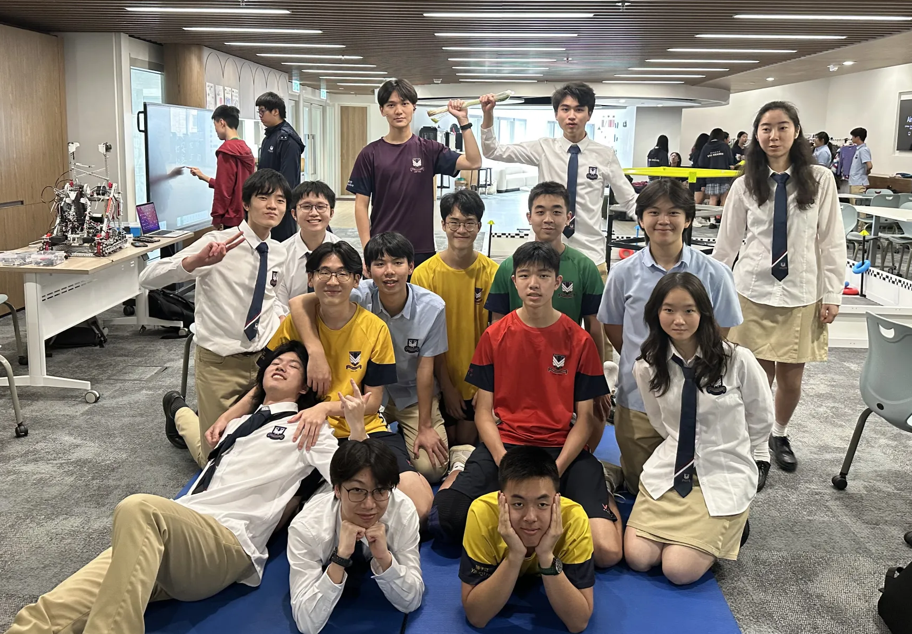
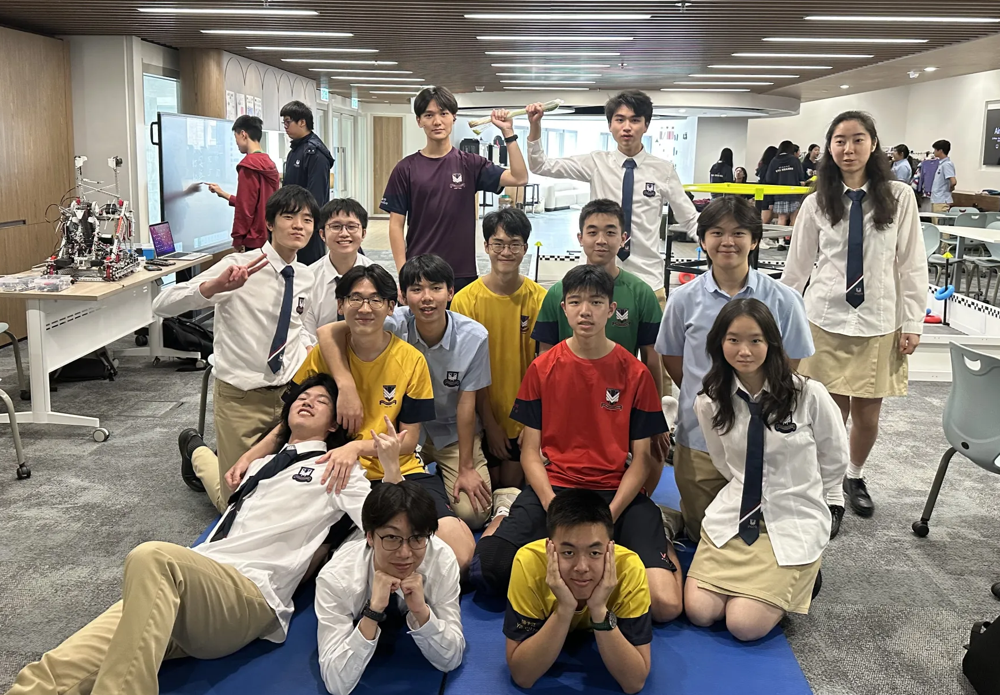
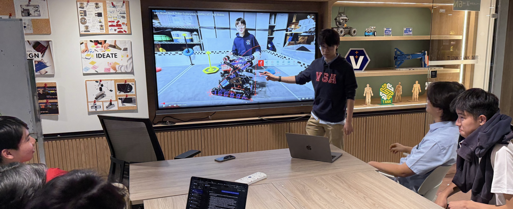
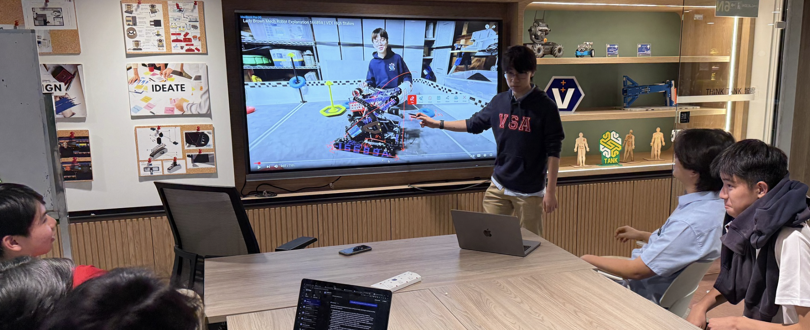

Push Back (2025–2026) — Coach
Robot Prototype
Early-stage prototype developed while mentoring students through design iteration, mechanical tradeoffs, and strategic architecture.
Notebooks, Design Reviews & Mentorship
Guided students through engineering documentation, competition strategy development, iteration cycles, and technical communication. Focused on building independent problem-solving skills.
High Stakes (2024–2025) — Captain

Robot V1 - Hong Kong Tech Open
Initial competition robot focusing on drivetrain optimization and consistent scoring mechanisms.
Robot V2 - VEX Worlds
Major redesign improving scoring throughput, mechanical reliability, and strategic adaptability.
Season highlights with the team, photos from School, the Hong Kong Tech Open and VEX Worlds.
 

 

Over Under (2023–2024) — Captain
Robot V1 - First Robot
Early season build emphasizing consistency and fast cycle times.
Robot V2 - Hong Kong Tech Open
Iteration improving mechanical robustness and endgame consistency.
Robot V3 - VEX Worlds
Final iteration featuring optimized mechanisms, wiring layout, and strategic improvements.
Season highlights with the team, photos taken at School, the Hong Kong Tech Open and VEX Worlds.